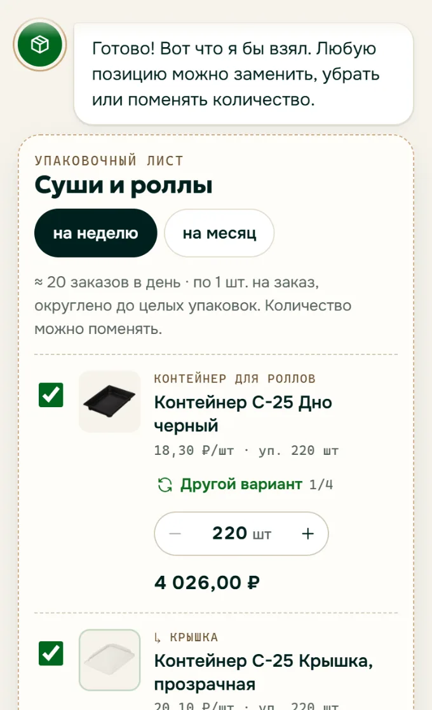

Персональный помощник
Три вопроса: что вы упаковываете, что важнее (цена, экологичность или внешний вид) и сколько заказов в день. В ответ готовый упаковочный лист из каталога с ценами и количеством на неделю или месяц. Любую позицию можно заменить, а весь список положить в корзину.
Для бизнесаНовый клиент не теряется среди 2 000 товаров и сразу берёт комплект. Это работает на конверсию и средний чек.
Попробовать помощника ↗